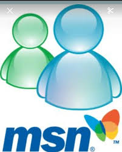
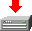
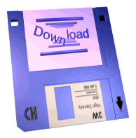
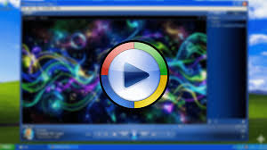

-MSN ESCARGOT- Reviva a era de ouro da comunicação instantânea com esse servidor que traz de volta o famoso menssageiro sucesso nos anos 2000.


Links quebrados? entre em contato conosco! mail@mail.com.br
O Winamp foi um dos mais icônicos reprodutores de mídia para Windows, lançado em 1997 pela Nullsoft, famoso por popularizar o formato MP3 no final dos anos 90 e início dos 2000.

O Windows Media Player (WMP) é um programa desenvolvido pela Microsoft para reproduzir arquivos de áudio e vídeo em computadores. Pré-instalado nativamente no Windows, ele permite organizar bibliotecas de mídia, "ripar" (converter) CDs de áudio para MP3, gravar discos e transmitir conteúdo para outros dispositivos.
Desenvolvido por Rafael Freire© - Todos os direitos reservados® - 2026